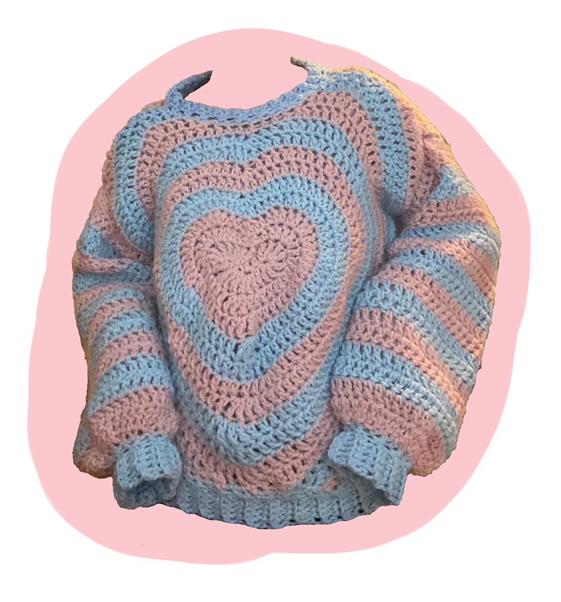

Heart Sweater

This is the first sweater I ever crocheted. I was inspired by a TikTok I saw and decided to give it a try. It is made mostly out of triple crochets using a size 8 hook and medium weight yarn. This gives it a very loose weave and makes it super comfortable.
I tried to find a pattern for how to make this sweater, but I couldn't find any that I liked. I ended up finding a YouTube video on how to make a crocheted heart coaster and used that for the base of my sweater. Once as I made the coaster, I kept going around the heart in triple crochets to start making it larger. The hard part was making the finished fabric square shaped instead of heart shaped. I made it into a square by focusing on building out the edges of the fabric.